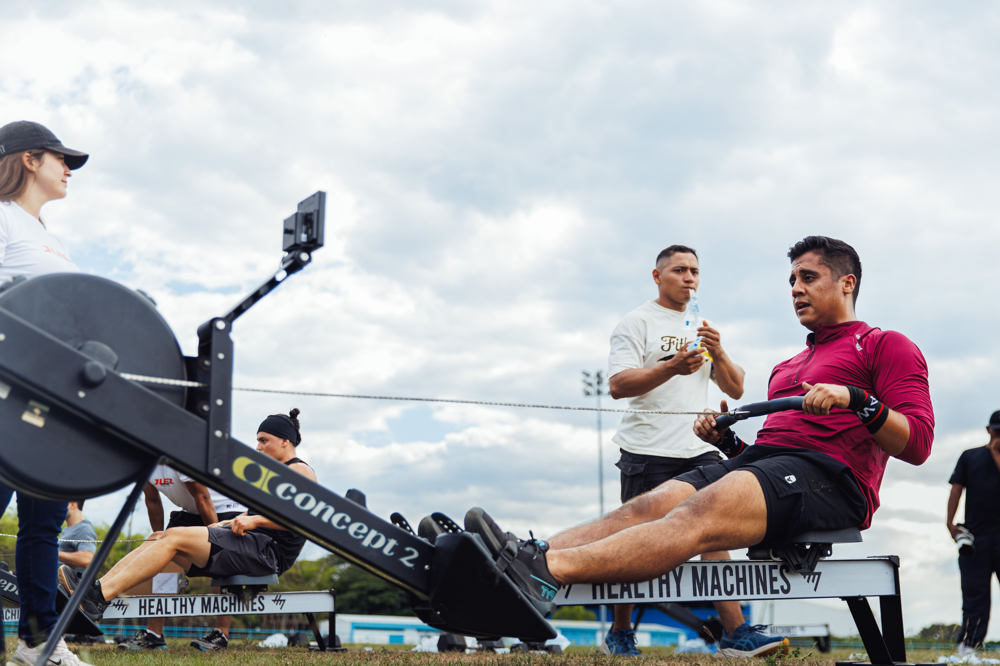

Conditioning
Improve endurance, build stamina, and develop cardiovascular fitness through structured conditioning workouts.

What Is Conditioning?
Conditioning involves exercises designed to improve the ability of your heart, lungs, and muscles to sustain physical activity. Common conditioning exercises include running, rowing, cycling, and interval training.
Types of Conditioning
Steady-State Cardio
Steady-state cardio involves maintaining a consistent effort for an extended period. Examples include jogging, cycling, or rowing at a comfortable pace.
High-Intensity Interval Training (HIIT)
HIIT alternates between periods of intense exercise and recovery. These workouts can help improve cardiovascular fitness and exercise performance.
Mixed-Modal Conditioning
Mixed-modal conditioning combines different movements such as rowing, running, burpees, and bodyweight exercises into one workout.
Example Conditioning Workout
Try this beginner-friendly interval workout using a rowing machine or stationary bike.
- Warm up for 5 minutes at an easy pace.
- Work for 1 minute at a challenging pace.
- Recover for 2 minutes at an easy pace.
- Repeat the work and recovery cycle 5 times.
- Cool down for 5 minutes.
Adjust the intensity based on your current fitness level and prioritize consistent movement over maximum effort.
Benefits of Conditioning
- Improved cardiovascular endurance
- Increased exercise stamina
- Better recovery between workouts
- Improved overall physical fitness
Combine Strength and Conditioning
A balanced fitness routine can include both resistance training and conditioning. Learn more about building strength below.
Explore Strength Training